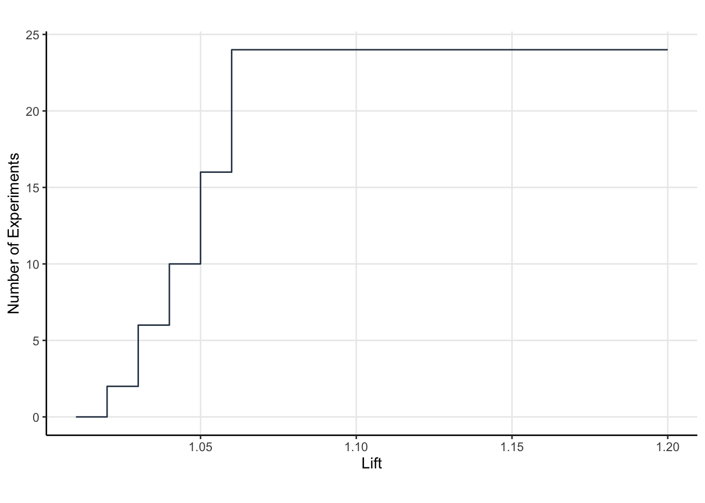

One of the most prevalent questions I’m asked about AB tests concerns sample size, and in particular its the minimal detectable effect (MDE). Without a meta-analysis of your experiments, its hard to say what you should use (aside from the sort of trite thought experiment of “what effect would you want to tell your boss?”).
I’ve been thinking about how to better choose the MDE based on data, and I think I’ve come up with a scheme to do so. In this post, I demonstrate how to use simulation to determine the optimal MDE for experiments. The MDE is chosen so as to optimize the “cumulative improvement” to the metric, under some mild and some strong assumptions. I assume team’s can perform a hierarchical analysis of their experiments as I described in this post.
The post begins with a list of assumptions about the team, constraints imposed thereon, and the nature of experimental effects. I then describe the simulation procedure, demonstrating how to perform the computations in R. While imperfect, I think this is at least a half way objective method to answer the MDE question.
Assumptions
Here some assumptions that makes life a little easier:
- Your team’s entire job is running CRO experiments. Due to resourcing constraints, you can only run 24 experiments per year (or 2 experiments per month on average).
- Your primary metric is signup rate, which is the number of unique users who sign up divided by the number of unique users who land on your site in some given time.
- You work in a frequentist framework, and you always run 2 tailed tests because you want to know if you hurt your signup rate. That is useful for posterity.
- Your main causal contrast is relative risk (signup rate in treatment divided by sign up rate in control). In industry, we call this the “lift”.
- Your baseline signup rate is 10% and you get about 2,500,000 unique visitors to your website per year.
- Assume your team generates lift fairly reliably and that these lifts sustain through time. There is no decay of the effect, no interaction between experiments, nor is there any seasonality to signup rate. These are blatantly false, but they simplify enough for us to get traction.
- Unbeknownst to you, your team generates experimental lift according by drawing from a log normal distribution, with parameters \(\mu=\log(1.02)\) and \(\sigma=0.01\) on the log scale.
- You are really only interested in positive effects (lift > 1) so you won’t implement anything with lift < 1, and if the null fails to be rejected you will stick with the status quo.
- You use the same MDE for each experiment.
Procedure
- Let’s refer to the number of unique visitors as
n_uuidand the baseline signup rate asbaseline. - Given an MDE, its easy to determine the requisite sample size. Call this
n_per_group. - This means you can run
min(24, n_uuid/n_per_group)experiments per year. - Each experiment has some true underlying lift called
real_lift. - Given the sample size, you can compute the power to detect
real_liftbut we’re only interested in rejecting the null when the probability the estimated lift is greater than 1. Call this powerpower. - Now, all we have to do is simulate binomial numbers for each experiment with probability of success
power. When the simulated number is 1, that means we detected that effect, else we failed to detect the effect. - Because we assumed lifts sustain through time, then the cumulative improvement to the sign up rate is the product of the detected lifts.
- The number we are optimizing for is the cumulative improvement to the signup rate (the cumulative lift).
This is fairly easy to program in R.

What I find most interesting here is that the “optimal MDE” (i.e the MDE which yields maximal cumulative improvement to signup rate) is not the average lift the team make. Its actually a little larger (~5% MDE where as the team generates a 2% lift on average). Moreover, its actually better to aim for large MDEs than low MDEs, as the expected cumulative improvement to signup rate tapers off much more slowly as the MDE grows large. This is likely because large MDEs allow for more experiments, meaning more opportunity to improve as opposed to running long experiments to detect small effects. That makes sense; large MDEs give you more kicks at the can.